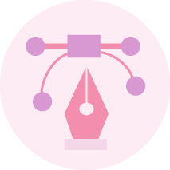
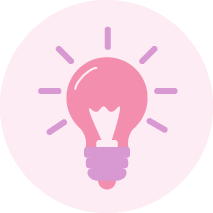

Interaction Design
Branding
Illustration
I study Interaction Design (IXD) at the Belfast School of Art, and since beginning my course I have loved extending my skill set, exploring areas of design that I would’ve never considered before.
Branding is one of our most recent projects in IXD and so far my favourite. Thinking my future designs for different companies could be on the likes of vechiles and billboards one day, brings me so much excitement.
My illustrative side is purposefully to add more fun and colour to my designs. I think illustrations add more character and help tell a entertaining story rather than just words. I love exploring the endless different styles of illustration.

Creative
Hard Working
Passionate
Creativity is key in this fast growing industry of design and creating unique designs with every project is what I aim to achieve. I grasp the importance of being unique and thinking outside the box in order to exceed goals.
I consider myself as very dedicated and reliable person as I find myself continually working my way through projects until I am happy with what I’ve produced, no matter how long it has taken me to complete.
I believe I am a passionate towards a number of things in life; design being one of them. I love feeling proud of what I have created and would love for my future clients to gain the same level of enjoyment from my designs.
I am always looking for exciting design opportunities and new experiences so feel free to send me an email and we can begin creating awesome together!